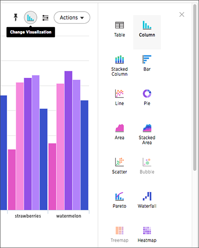

Understand charts
Your search needs at least one attribute and one measure to be presented as a chart. When you choose to display your answer as a chart, ThoughtSpot will assign it the best fit chart type.
{% include note.html content="Colors are maintained across searches within a session. For example, when doing a search on revenue by state, each state will keep its color assigned to it even if you change the search or chart type." %}
You can choose from a large number of chart types in ThoughtSpot. Each chart type provides you with a different visualization for your answer.
You can also link:{{ site.baseurl }}/end-user/search/change-the-chart.html[adjust the axes, labels, and view of the chart].
About chart types
You can choose from a large number of chart types in ThoughtSpot. Each chart type provides you with a different visualization for your answer.
To change the chart type of your answer:
-
Click Change visualization to get a palette of charts, maps, pivot table, and so on (scroll down to see more.)

-
Click a different chart or visualization type.

Choosing a chart
| Some chart types may not be available, depending on the columns in your search. For example, if your search does not contain at least one geographical column, then you will not be able to select any of the geo chart types. ThoughtSpot shows unavailable chart types as grayed out. |
Hovering over a chart type icon tell you what columns you require before you can use it.
-
link:{{ site.baseurl }}/end-user/search/about-column-charts.html[Column charts] + The column chart is one of ThoughtSpot’s simplest, yet most versatile chart type. The column chart is often the chosen default chart type, and displays data as vertical columns.
-
link:{{ site.baseurl }}/end-user/search/about-column-charts.html#stacked-columns[Stacked columns] The stacked column combines the different secondary dimensions into a single column, stacking them. Note that the dimensions retain their relative size and color.
-
link:{{ site.baseurl }}/end-user/search/about-bar-charts.html[Bar charts] + The bar chart is nearly identical to the column chart. The primary difference is that it displays data as horizontal bars.
-
link:{{ site.baseurl }}/end-user/search/about-bar-charts.html#stacked-bar-charts[Stacked bar charts] Just like stacked columns, stacked bars combine the different secondary dimensions into a single stacked bar.
-
link:{{ site.baseurl }}/end-user/search/about-line-charts.html[Line charts] + Like the column chart, the line chart is one of ThoughtSpot’s simplest, yet most versatile chart type. More often than not the line chart will be chosen as your default chart type.
-
link:{{ site.baseurl }}/end-user/search/pie-charts.html[Pie charts] + The pie chart is a classic chart type that displays your search in a circle. The pie chart ThoughtSpot shows is in the shape of a doughnut.
-
link:{{ site.baseurl }}/end-user/search/area-charts.html[Area charts] + The area chart is based on the line chart, but has filled in regions.
-
link:{{ site.baseurl }}/end-user/search/area-charts.html#stacked-area-charts[Stacked area charts] This option stacks the values of one dimension on top of the other, enabling you to clearly see the relative volume of data under the line. Contrast this with the presentation in the area chart, where data for different overlaps.
-
link:{{ site.baseurl }}/end-user/search/about-scatter-charts.html[Scatter charts] + The scatter chart is useful for finding correlations or outliers in your data.
-
link:{{ site.baseurl }}/end-user/search/about-bubble-charts.html[Bubble charts] + The bubble chart displays three dimensions of data with each containing a set of values.
-
link:{{ site.baseurl }}/end-user/search/about-pareto-charts.html[Pareto charts] + The pareto chart is a type of chart that contains both columns and a special type of line chart.
-
link:{{ site.baseurl }}/end-user/search/about-waterfall-charts.html[Waterfall charts] + The waterfall chart is used to show how an initial value is affected by a series of intermediate positive or negative values.
-
link:{{ site.baseurl }}/end-user/search/about-treemap-charts.html[Treemap charts] + The treemap chart displays hierarchical data as a set of nested rectangles.
-
link:{{ site.baseurl }}/end-user/search/about-geo-charts.html#heatmap-charts[Heatmap charts] + The heatmap chart displays individual data values in a matrix following a color scale.
-
link:{{ site.baseurl }}/end-user/search/line-column-charts.html[Line column charts] + The line column chart combines the column and line charts.
-
link:{{ site.baseurl }}/end-user/search/about-funnel-charts.html[Funnel charts] + The funnel chart shows a process with progressively decreasing proportions amounting to 100 percent in total.
-
link:{{ site.baseurl }}/end-user/search/about-geo-charts.html[Geo charts] + There are three geo charts that let you visualize geographical data in ThoughtSpot: Area, Bubble, and Heatmap.
-
link:{{ site.baseurl }}/complex-search/about-pivoting-a-table.html[Pivot tables] + Pivot tables in ThoughtSpot use the well known drag-and-drop interface. Creating a pivot table enables exploring alternate visualization of data in a wide table. The basic idea is that some data is easier to consume when laid out horizontally, while others, vertically.
-
link:{{ site.baseurl }}/end-user/search/about-sankey-charts.html[Sankey charts] + Sankey charts show a flow from one set of values to another, usually with visual emphasis (brighter colors or larger bandwidths) for comparison of the values (e.g., top cities in terms of sales might be emphasized).
-
link:{{ site.baseurl }}/end-user/search/about-radar-charts.html[Radar charts] Radar charts display multivariate data on a two-dimensional chart of three or more quantitative variables that plot on axes (spokes) that originate at the same point.
-
link:{{ site.baseurl }}/end-user/search/candlestick-charts.html[Candlestick charts] Candlestick charts efficiently collapse financial information, such as price movements on a single day, into a unified representation. A single 'candlestick' shows the open, high, low, and close prices for the same day.
Charts with multiple measures on the y-axis
You can have multiple measures on the y-axis of many charts, which is a great additional way of presenting information in a chart.

Example of multiple measures on the y-axis of a stacked column chart.
The folloing charts support multiple measures on the y-axis:
-
Column
-
Stacked Column
-
Bar
-
Stacked Bar
-
Line
-
Area
-
Stacked Area
-
Waterfall
-
Line Column
-
Line Stacked Column
To learn more, see link:{{ site.baseurl }}/end-user/search/show-data-labels.html#stack-multiple-measures-on-the-y-axis[Stack multiple measures on the y-axis].